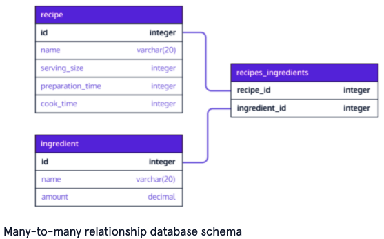

Relational Databases
General Terminology
Database
Database vs spreadsheet
Database management system (DBMS)
Records
Columns
Relational database
Relational database management system (RDBMS)
Relational database structure
Commitment
ACID
Relational database rules
Locking
SQL
Key
Primary key
Composite primary key
Relationships
Stored procedures
Unstructured data
MySQL
PostgreSQL
SQLite
Benefits of using a dedicated database server
OracleDB
SQL Server
NoSQL
Considerations when selecting a database
SQL vs. NoSQL databases
Autonomous database
Database Design
Database schema
To consider when designing a database
Popular database schema design software
Information schema
Separating out into multiple tables
Postgres
How Postgres works
Postbird
PgAdmin
psql
SQL Clauses
Clause
Statement
Common data types
Additional Postgres data types
Constraints
Result set
CREATE TABLE
ALTER TABLE
INSERT INTO
SELECT
WHERE
AS
SELECT DISTINCT
ORDER BY
UPDATE
DELETE FROM
LIMIT
CASE...WHEN
WHERE Operators
Arithmetic Operators
LIKE
BETWEEN
AND
OR
IS NULL
Aggregates
Aggregates
COUNT()
SUM()
MAX() and MIN()
AVG()
ROUND()
GROUP BY
HAVING
Column references
Working with Multiple Tables
Joining
Foreign key
One to one database relationships
One to many database relationships
Many to many database relationships
Join table
JOIN
INNER JOIN
LEFT JOIN
CROSS JOIN
UNION
WITH
REFERENCES
SELECT among multiple tables
UNIQUE
Resources
General Terminology
Database
- A set of data (structured information) that’s stored on a computer
- It’s usually structured in a way that makes data easily accessible
Database vs spreadsheet
- Spreadsheets are made for one user or a small group of users. Incredibly complicated manipulation isn’t often required
- Databases allow massive amounts of users to access data quickly and securely at the same time
- Spreadsheets: simple organization, usually with few or no relationships between records
- Databases allow complex organization
- How much data can be stored
Database management system (DBMS)
- A program that serves as an interface between the database and the programs that use it (users)
- It allows users to retrieve info, update info, and manage how it’s stored and organized
- It also handles monitoring, tuning, and backup + recovery
- Often the data, DBMS, and associated applications are just known as the database
- Popular DBMS’s: MySQL, SQLite, PostgreSQL, Microsoft Access, Microsoft SQL Server, FileMaker Pro, Oracle Database, and dBase
Records
- The rows of data
- Tables can have millions + records of data
Columns
- Hold attributes of the data
- Each record usually has a value for each attribute. Data types are often specified
Relational database
- A type of database in which data can be identified and accessed in relation to another piece of data in the database
- Data in relational databases is usually organized into tables
- Each record has a unique ID called the key
- Different tables might have a same column in common - i.e. the customer id. Because of that common column, the database creates a relationship between the two tables
- They excel at data consistency across applications and copies of the database. They ensure multiple instances of the same database always have the same data
- Have been around since the 1970’s
Relational database management system (RDBMS)
- Provides the ability to create, update, and administer a relational database
- Most RDBMS’s use SQL to access the database
Relational database structure
- In the relational model the tables, views, and indexes are separate from physical storage structures
- This separation allows actions like renaming a database without renaming the tables stored within it
Commitment
- Making a permanent change to the database
ACID
- Four essential properties of relational database transactions
- Atomicity: A series of database transactions in which either all occur or none are allowed to occur
- Consistency: rules to keep data in the correct state after a transaction
- Isolation: Keeps the effect of a transaction invisible to other transactions until it’s committed. This helps avoid confusion
- Durability: Makes sure changes are permanent after commitment
Relational database rules
- Usually there are specific integrity roles - like no duplicate rows
- Granular business rules can also be implemented to enforce atomicity. For example an inventory database with three parts always used together. I.e. it won’t let a checkout for one be committed if inventory of another part is out.
- Concurrency rules: control policies for users/applications calling queries at the same time on the same database
Locking
- The prevention of other users/apps from accessing data while it’s being updated
- In some databases the whole table is locked (hurts performance) while in others just the record is locked.
SQL
- Programming language to communicate with data stored in an RDBMS
- It’s similar to english - easy to read and learn
- It’s based on relational algebra - is internally consistent. This helps for performance.
Key
- A column or group of columns in a relational db table that uniquely identifies a row in a table
- They allow for constraints on the data in a table to enforce integrity. This includes:
- Avoiding duplicity
- Maintain relationships between tables
- Many types of keys, including (italics most common): Super, Candidate, Primary, Foreign, Composite, and Secondary
Primary key
- Uniquely identify each row. Duplicate primary keys will throw an error
- Can apply to a column or multiple columns
- Ensures that the column data is unique and not null
- Examples: SSN in an employee table
Composite primary key
- Designate multiple columns to serve as the primary key
- Example: Since multiple states can have the same city name, set state and city name as both primary keys
Relationships
- The way connected tables (in the schema) are dependent on one another
Stored procedures
- Data access functions for repeated database operations that can be accessed with a simple application call
- This allows developers to not have to rewrite the functions themselves in each new application
Unstructured data
- Data that doesn’t lend itself to table-style formatting used in relational databases
- MongoDB says 80-90% of data generated + collected now is unstructured
MySQL
- The most popular open source SQL database
- Popular in web development. Was often used with php
- Advantages: easy to use, cheap, and a large community
- Disadvantages: poor performance when scaling, open source development has fallen behind since Oracle took control of it, and lacks some advanced features
PostgreSQL
- Open source SQL database that’s independent of any corporation
- Advantages: same as MySQL
- Disadvantages: Slower than MySQL and less popular
- Denoted by .sql files
- Still used in industry - Apple, Instagram, Twitch, and Reddit use it
SQLite
- Popular open source SQL database. Stores the whole database in a file, allowing for local storage without connection to a server
- Popular for cell phones and other small electronics
- Denoted by .sqlite files
Benefits of using a dedicated database server
- Better organization of database information
- More efficient storage
- Faster retrieval
OracleDB
- Closed source database used for large applications. Is popular in banking
- It’s expensive
SQL Server
- Closed source database owned by Microsoft
- Commonly used by large enterprises
- An entry level version called Express is free. Scaling it can become very expensive
NoSQL
- Not only SQL - they are non-relational databases
- Don’t require predefined schemas
- Format can be:
- Document-based (JSON)
- Graph databases
- Key-value pairs
- Wide-column stores
- Objects - as in object oriented programming
- All databases fall within the format of SQL or NoSQL databases
Considerations when selecting a database
- How accurate do we want?
- Are there regulatory requirements on the accuracy? (i.e. for financial data)
- Does data storage/accuracy depend on business logic?
- What is the current scale?
- What is the anticipated growth?
- Are multiple mirrored database copies (instances) required? If so, how accurate does data need to be across them?
- How important is it?
- Will multiple users/apps need access at the same time?
- Does the database management system need to support concurrency while also protecting the data?
- Performance and reliability needs
- Is high performance/high uptime required
- Requirements for query response performance?
- What is the plan for unplanned downtime?
SQL vs. NoSQL databases
- The best at maintaining timely consistency with large amounts of data. NoSQL databases can only supply eventual consistency - when the database is scaled or multiple users are accessing at the same time, data needs time to catch up
- Note: for some applications it’s ok to have eventual consistency. I.e. listings in a product catalog or on social media. However for critical business operations like cart checkouts, you need timely consistency.
Autonomous database
- A new type of database that keeps the power and security of a relational database while using AI to improve query performance
- Example: running hypotheses and tests on indices, then pushing thes best ones into production. This can make queries faster without human intervention
- Allows for starting a database much quicker. It can scale up on its own later
- Saves developers from the boring and non-innovative tasks of managing the database
- Also known as self-driving databases
Database Design
Database schema
- An architectural blueprint for the database
- Provides
- Overview of the purpose of the database
- Data that makes up the database (tables and columns)
- How the data is organized into tables
- How the tables relate to one another
- Table names
- Column names and types for each table
- Constraints per table (if applicable)
- Relationships between tables (if applicable)
- Example for a book inventory database:
- Note: 1 and * denote a one to many relationship

To consider when designing a database
- What is its purpose
- What information makes it?
- How to organize the information into tables?
- Avoid redundant data - it wastes space and can lead to mismatches
- Identify and implement relationships between tables
Popular database schema design software
- DbDiagram.io - a free, simple tool to draw ER diagrams by just writing code, designed for developers and data analysts
- SQLDBM - SQL Database Modeler
- DB Designer - online database schema design and modeling tool
Information schema
- A read only database that has meta information about objects in the databases. This info includes tables, columns, and constraints
- Note that constraint names (i.e. constraint_name in the below queries) is generated by default
- pkey = primary key constraint
- fkey = foreign key constraint
- Postgres example: view all constraints among all tables in a database:
SELECT
constraint_name, table_name, column_name
FROM
information_schema.key_column_usage
- Postgres example: view all constraints in a table:
SELECT
constraint_name, table_name, column_name
FROM
information_schema.key_column_usage
WHERE
table_name = 'recipe';
Separating out into multiple tables
- If you have a scenario where you want to maintain additional optional information, but it won’t be included with every book, consider breaking this info into another table
- Otherwise, you’ll have a lot of empty/null records in your big table which can get messy
- Example: Additional book info such as book rating, language, tag, and date of publication. If you put all this in the main books table, you might wind up with a lot of empty columns
Postgres
Note: See Node-SQLite to use an sqlite database locally
How Postgres works
- It’s a database server
- A variety of clients can connect to it, including a GUI Client, CLI Client, and Programming Language Client (usually via an ORM)
- To run it locally, both a Postgres server and client need to be set up. See Codecademy for details
Postbird
- A simple GUI for Postgres database manipulation
- Is open source
PgAdmin
- Another good open source GUI for Postgres
psql
- Standard CLI for interacting with a Postgres database
- Used in industry and by hobbyists
- Queries can be typed into the command line or via a file
- Clicking on a database in the Postgress app for mac automatically opens the terminal with psql
SQL Clauses
Clause
- A specific SQL command (i.e. CREATE TABLE)
Statement
- Text that the database recognizes as a valid command
- Statements always end in semicolons
- Components of a statement:
- Clause
- Table name: name of the table the command is applied to
- Parameter: list of columns, data types, or values (i.e. if inserting into) passed into the clause as an argument
CREATE TABLE table_name (
column_1 data_type,
column_2 data_type,
column_3 data_type
);
Common data types
- integer
- text: a text string with an unlimited length
- date: YYYY-MM-DD
- real: a decimal value
Additional Postgres data types
- decimal: floating-point number i.e. 26.17345
- money: floating-point number with two decimal places. I.e. 6.17
- boolean: TRUE or FALSE
- char(n): fixed length string. Trailing blanks get automatically removed.
- I.e. ‘123 ‘ becomes ‘123’
- varchar(n): variable-length string that does not remove trailing blanks
Constraints
- Specify additional information for how a column can be used after invoking the data type when creating or altering a table
- The database will reject inserted data that doesn’t adhere to those constraints
- A few examples:
- PRIMARY KEY: Recall a table can only have one of them. Can be multiple columns
- PRIMARY KEY (column_one, column_two): Create a composite primary key. Designate multiple columns as the primary key
- UNIQUE: Must have a different value for every row
- A table can have many different UNIQUE columns
- Must have a value; inserting without a value for that column will throw an error and the row won’t be inserted
- Takes in an additional argument that will be the value inserted unless otherwise given
CREATE TABLE celebs (
id integer PRIMARY KEY,
name text UNIQUE,
date_of_birth text NOT NULL,
date_of_death text DEFAULT 'Not Applicable'
);
Result set
- A new table that’s always returned by a SELECT statement based on what is queried
CREATE TABLE
CREATE TABLE celebs (
first_name varchar(15),
last_name varchar(15),
age integer,
ssn char(9)
);
ALTER TABLE
- Adds a new column to a able
- Follow it with the ADD COLUMN clause
- Rows in the table that existed before adding this column will get a NULL value
- Examples:
ALTER TABLE celebs
ADD COLUMN twitter_handle TEXT;
ALTER TABLE chapter
DROP COLUMN content
INSERT INTO
- Statement to add rows to a table
- Example with columns specified:
INSERT INTO celebs (id, name, age)
VALUES (1, 'Justin Bieber', 22);
- Example without columns specified:
INSERT INTO celebs
VALUES (1, 'Justin Bieber', 22);
- Example with multiple rows:
INSERT INTO celebs
VALUES
(1, 'Justin Bieber', 22),
(1, 'Lady Gaga', 30);
SELECT
- Fetch data from a database
- By specific column(s): SELECT name FROM celebs;
- Get all columns: SELECT * FROM celebs;
WHERE
- Filters the result set to only return rows where the condition following WHERE is true
SELECT *
FROM movies
WHERE imdb_rating > 8;
AS
- Allows you to rename a column as an alias
- It’s best practice to surround your alias with single quotes
- Note: AS is not renaming the columns in the table, only in the result set
- Example:
SELECT name AS 'Titles'
FROM movies;
SELECT DISTINCT
- Return unique rows in the SELECT output
SELECT DISTINCT tools
FROM inventory;
ORDER BY
- Sort results alphabetically or numerically
- Goes after WHERE
- Ascending is ASC, descending is DESC
- Example for descending:
SELECT *
FROM movies
WHERE imdb_rating > 8
ORDER BY year DESC;
UPDATE
- Edit an existing row in a table
- Follow it with the SET clause to add the row value
- Example:
UPDATE celebs
SET twitter_handle = '@taylorswift13'
WHERE id = 4;
DELETE FROM
- Deletes one or more existing rows from a table
- Example: delete all rows
DELETE FROM celebs
- Example: delete all rows based on condition:
DELETE FROM celebs
WHERE twitter_handle IS NULL;
LIMIT
- Cap the number of rows in a result to save space and make queries faster
- It always goes at the end of the query
- Note that it’s not supported by some databases
SELECT *
FROM movies
LIMIT 10;
CASE...WHEN
- The way to handle if-then logic in SQL
- WHEN tests the condition
- THEN and ELSE gives a value depending on the conditions
- END is required to end
- Usually, use END AS ‘your_column_name’ Otherwise, the query will be put in the column name
SELECT name,
CASE
WHEN imdb_rating > 8 THEN 'Fantastic'
WHEN imdb_rating > 6 THEN 'Poorly Received'
ELSE 'Avoid at All Costs'
END AS 'Review'
FROM movies;
WHERE Operators
Arithmetic Operators
- =, !=, >, <, <=, and >= can be used
LIKE
- Searches for a specific pattern
- Note that LIKE is not case sensitive
- Examples:
- name LIKE ‘Se_en’ is a wildcard where any value for the _ matches the pattern
- name LIKE ‘%Se_en%’ is another wildcard that matches values including the pattern (i.e. name=Furious Seven will also be returned)
- name LIKE ‘A%’ matches any names that begin with the letter A
BETWEEN
- Filter the result set within a certain range
- Accepts numbers, text, or dates
- Note that it goes up to the second value but not after it. So a movie named “J” in the second query would match, but not “Jaws”
SELECT *
FROM movies
WHERE year BETWEEN 1990 AND 1999;
SELECT *
FROM movies
WHERE name BETWEEN 'A' AND 'J';
AND
- Used to combine multiple conditions
SELECT *
FROM movies
WHERE year BETWEEN 1990 AND 1999
AND genre = 'romance';
OR
- Displays a row if any condition is true
SELECT *
FROM movies
WHERE year > 2014
OR genre = 'action';
IS NULL
- Condition that returns true if a value is NULL and false otherwise
- IS NOT NULL can also be used
Aggregates
Aggregates
- Calculations done on multiple rows of a table
COUNT()
- Calculate the number of rows in a table or result set
- All rows:
SELECT COUNT(*)
FROM fake_apps;
SELECT COUNT(*)
FROM fake_apps
WHERE price = 0;
SUM()
- Add all values in a column
SELECT SUM(downloads)
FROM fake_apps;
MAX() and MIN()
- Return the highest and lowest values in a column, respectively
SELECT MAX(downloads)
FROM fake_apps;
AVG()
- Calculate the average value for a column
SELECT AVG(price)
FROM fake_apps;
ROUND()
- Takes in two arguments: the column and an integer (for # of decimal places)
SELECT ROUND(price, 0)
FROM fake_apps;
- Note that you can also put other argument inside this, i.e.
SELECT ROUND(AVG(price), 2)
FROM fake_apps;
GROUP BY
- A SQL clause used with aggregate functions to group rows that have the same values into summary rows
- Comes after WHERE but before any ORDER BY
- Commonly used with COUNT to get the number of rows matching the criteria of a column:
SELECT price, COUNT(*)
FROM fake_apps
GROUP BY price;
Returns:
price COUNT(*)
0.0 73
0.99 43
1.99 42
2.99 21
3.99 9
14.99 12
- Example for the number of downloads by category:
SELECT category, SUM(downloads)
FROM fake_apps
GROUP BY category;
Returns:
category SUM(downloads)
Books 160864
Business 178726
Catalogs 186158
Education 184724
Entertainment 95168
- You can also use group by for multiple columns to get more granular:
SELECT category,
price,
AVG(downloads)
FROM fake_apps
GROUP BY category, price;
HAVING
- A way to filter groups (as opposed to filtering rows, which is what WHERE does) based on an aggregate property
- Comes after GROUP BY but before ORDER BY
- Note: you can have WHERE clauses in statements that also have HAVING. The WHERE comes before
- The below query filters out results where the # of apps is < 10:
SELECT price,
COUNT(*)
FROM fake_apps
GROUP BY price
HAVING COUNT(*) > 10;
Returns:
price COUNT(*)
0.0 73
0.99 43
1.99 42
2.99 21
14.99 12
Whereas
SELECT price,
COUNT(*)
FROM fake_apps
GROUP BY price
-- HAVING COUNT(*) > 10;
Returns:
price COUNT(*)
0.0 73
0.99 43
1.99 42
2.99 21
3.99 9
14.99 12
Column references
- When doing operations on calculations done on a column, 1, 2, 3, … can be used to refer to the nth column selected. The below two queries are equivalent. The second one saves time and is easier to read:
SELECT ROUND(imdb_rating),
COUNT(name)
FROM movies
GROUP BY ROUND(imdb_rating)
ORDER BY ROUND(imdb_rating);
With column references:
SELECT ROUND(imdb_rating),
COUNT(name)
FROM movies
GROUP BY 1
ORDER BY 1;
Working with Multiple Tables
Joining
- Combining different tables based on matching parameters to understand a bigger system
Foreign key
- A key that references a column in another table. For instance, when the primary key for one table appears in a different table
- The most common types of joins are joining a foreign key from one table to the primary key of another. This also has performance benefits with indexing
- Example: To create a record in the emails table, there must be a record in the people table. However there need not be a record in the emails table when creating a new people record
One to one database relationships
- A row of table A is associated with exactly one row of table B, and vice versa
- Example: One person can have only one drivers licence ID assigned to them, and vice versa
One to many database relationships
- Analogous to a parent-child relationship where a parent can have multiple children. A parent table houses a primary key and the child table houses both primary and foreign keys, with the foreign key binding the child to the parent
- Example: A person table and an email table. One person can have many emails
Many to many database relationships
- When multiple records in one table are associated with multiple records in another table
- They can be broken down into two one-to-many relationships
- To implement them, we create a third cross-referencing table called a join table
- Example: a recipe can have many ingredients and a single ingredient belongs in many different recipes
Join table
- A table to cross reference two many-to-many tables
- Has:
- Foreign keys referencing the primary keys of the two member tables
- A composite primary key consisting of the two foreign keys above
- Aka a cross reference table
- After creating a join table, you can add records to it to establish necessary relationships
- Schema example:

- Example of creating a join table from the above schema
CREATE TABLE recipies_ingredients (
recipie_id integer REFERENCES recipe(id),
ingredient_id integer REFERENCES ingredient(id),
PRIMARY KEY (recipie_id, ingredient_id)
);
The information schema will then look like:
SELECT
constraint_name, table_name, column_name
FROM
information_schema.key_column_usage
constraint_name table_name column_name
recipie_pkey recipe id
ingredient_pkey ingredient id
recipies_ingredients_pkey recipies_ingredients recipie_id
recipies_ingredients_pkey recipies_ingredients ingredient_id
recipies_ingredients_recipie_id_fkey recipies_ingredients recipie_id
recipies_ingredients_ingredient_id_fkey recipies_ingredients ingredient_id
JOIN
- Specify what tables to combine and how to do it
- Because column names can be repeated across tables, use table_name.column_name to be specific
- Example:
SELECT *
FROM orders
JOIN subscriptions
ON orders.subscription_id = subscriptions.subscription_id
WHERE subscriptions.description = 'Fashion Magazine';
INNER JOIN
- Same thing as a JOIN
- It results only in rows that match the ON condition
LEFT JOIN
- Combines tables while keeping the unmatched rows from the first table
SELECT *
FROM newspaper
LEFT JOIN online
ON newspaper.subscriber_id = online.subscriber_id;
- Can be combined with WHERE NULL to filter out where there aren’t any matches:
SELECT *
FROM newspaper
LEFT JOIN online
ON newspaper.subscriber_id = online.subscriber_id
WHERE online.subscriber_id IS NULL;
CROSS JOIN
- Simply combine all rows of one table with rows of another table
- You don’t need an ON statement because you aren’t really joining on anything
- You can cross join as many tables as you want
- For example, see all possible combinations of shirts (table has 3 rows) and pants (table has 2 rows):
SELECT shirts.shirt_color,
pants.pants_color
FROM shirts
CROSS JOIN pants;
Returns:
shirt_color pants_color
white light denim
white black
grey light denim
grey black
olive light denim
olive black
UNION
- Combine two tables if they satisfy the following requirements:
- Same number of columns
- Same data types in the same order
WITH
- Join the results of a separate query (instead of a table) with another table using an alias
- Remember not to include a ; inside of the width statement
WITH previous_query AS (
SELECT customer_id,
COUNT(subscription_id) AS 'subscriptions'
FROM orders
GROUP BY customer_id
)
SELECT customers.customer_name, previous_query.subscriptions
FROM previous_query
JOIN customers
ON previous_query.customer_id = customers.customer_id
REFERENCES
- Used to create a foreign key among other tables
- This ensures that you can correctly join the tables in a query
- Data types need to be the same among both tables
- Postgres example:
CREATE TABLE person (
id integer PRIMARY KEY,
name varchar(20),
age integer
);
CREATE TABLE email (
email varchar(20) PRIMARY KEY,
person_id integer REFERENCES person(id),
storage integer,
price money
);
- Note: When querying the information_schema, this now looks like:
SELECT
constraint_name, table_name, column_name
FROM
information_schema.key_column_usage
constraint_name table_name column_name
book_pkey book isbn
chapter_book_isbn_fkey chapter book_isbn
chapter_pkey chapter id
SELECT among multiple tables
- You can return a table of columns from multiple tables:
SELECT book.title AS book, chapter.title AS chapters
FROM book, chapter
WHERE book.isbn = chapter.book_isbn;
- Note: without the WHERE clause, it’ll do a cross join and give all permutations
- The above SQL is the same as:
SELECT book.title AS book, chapter.title AS chapters
FROM book
JOIN chapter
ON book.isbn = chapter.book_isbn;
UNIQUE
- Foreign key. Append this to the declaration of a foreign key to set a strict one to one relationship in Postgres
- Example:
CREATE TABLE driver (
license_id char(20) PRIMARY KEY,
name varchar(20),
address varchar(100),
date_of_birth date
);
CREATE TABLE license (
id integer PRIMARY KEY,
state_issued varchar(20),
date_issued date,
date_expired date,
license_id char(20) REFERENCES driver(license_id) UNIQUE
);
- Another example for adding in additional details to existing table:
CREATE TABLE book_details (
id integer PRIMARY KEY,
book_isbn varchar(50) REFERENCES book(isbn) UNIQUE,
rating decimal,
language varchar(10),
keywords text[],
date_published date
);
Resources